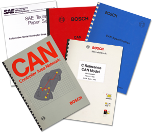

CAN技术的历史¶
本文译自 CiA 的一篇文章 -- History of CAN technology。

博世发布的第一份描述 CAN 协议（CAN 规范 1.0）、C 参考 CAN 模型和 SAE 论文的文件
1986 年 2 月，罗伯特·博世有限公司在汽车工程师协会 （SAE） 大会上推出了控制器局域网 （CAN） 串行总线系统。这是有史以来最成功的网络协议之一诞生的时刻。如今，欧洲制造的几乎每辆新乘用车都至少配备了一个 CAN 网络。CAN 还用于其他类型的车辆，从火车到轮船，以及工业控制，是最具主导地位的总线协议之一，甚至可能是全球领先的串行总线系统。
从想法到第一个芯片¶
1980 年代初期，博世的工程师正在评估现有串行总线系统在乘用车中的可能用途。由于可用的网络协议都无法满足汽车工程师的要求，Uwe Kiencke 于 1983 年开始开发新的串行总线系统。
新的总线协议主要应该增加新功能 —— 线束的减少只是一个副产品，而不是 CAN 开发背后的驱动力。梅赛德斯-奔驰的工程师很早就参与了新串行总线系统的规范阶段，英特尔作为潜在的主要半导体供应商也是如此。德国布伦瑞克-沃尔芬比特尔应用科学大学（现：奥斯特法利亚应用科学大学）的 Wolfhard Lawrenz 教授博士曾被聘为顾问，他将新网络协议命名为“控制器局域网”。卡尔斯鲁厄大学的 Horst Wettstein 教授博士也提供了学术帮助。
1986 年 2 月，CAN 诞生了：在底特律举行的 SAE 大会上，新的总线系统被引入“汽车串行控制器局域网”。Uwe Kiencke、Siegfried Dais 和 Martin Litschel 引入了多点网络协议。它基于非破坏性仲裁机制，允许总线访问具有最高优先级的帧，而不会出现任何延迟。没有中央实例来仲裁网络访问。此外，CAN 之父 —— 上述个人以及博世员工 Wolfgang Borst、Wolfgang Botzenhard、Otto Karl、Helmut Schelling 和 Jan Unruh —— 已经实施了多种错误检测机制。错误处理还包括自动断开故障总线节点的连接，以保持其余节点之间的通信。传输的帧不是由帧发送器或帧接收器的节点地址（与几乎所有其他总线系统一样）识别的，而是通过其内容来识别的。表示帧有效载荷的标识符还具有指定帧在网段内的优先级的功能。
随后，许多描述这种创新通信协议的演示和出版物紧随其后，直到 1987 年年中（提前两个月）英特尔交付了第一款 CAN 控制器芯片 82526。这是 CAN 协议的第一个硬件实现。在短短四年内，一个想法变成了现实。此后不久，飞利浦半导体推出了 82C200。这两个 CAN 控制器的最早祖先在验收滤波和帧处理方面截然不同。一方面，与飞利浦选择的 BasicCAN 实现相比，英特尔青睐的 FullCAN 概念需要连接微控制器的 CPU（中央处理单元）负载更少。另一方面，FullCAN 设备在可以接收的帧数方面受到限制。BasicCAN 控制器也需要更少的芯片。在当今的 CAN 控制器中，实现了接受过滤和帧处理这两个概念的混合。这使得误导性术语 BasicCAN 和 FullCAN 已经过时。
标准化和一致性¶
CAN 规范 2.0 版（Robert Bosch GmbH）于 1990 年代初提交国际标准化。经过几次政治争端，特别是涉及法国一些主要汽车制造商开发的“车域网”（VAN），ISO 11898 标准于 1993 年 11 月发布。除了 CAN 协议外，它还标准化了比特率高达 1 Mbit/s 的物理层。同时，ISO 11519-2 中标准化了一种通过 CAN 传输的低功耗、容错数据方式。由于标准中的弱点，这从未实施。1995 年，ISO 11898 标准通过附录进行了扩展，该附录描述了使用 29 位 CAN 标识符的扩展帧格式。
不幸的是，所有已发布的 CAN 规范和标准化都包含错误或不完整。为避免不兼容的 CAN 实现，博世确保所有 CAN 芯片都符合博世 CAN 参考模型。此外，德国布伦瑞克/沃尔芬比特尔应用科学大学在劳伦茨教授的领导下，多年来一直在进行 CAN 合格性测试。使用的测试模式基于 ISO 16845 一致性测试计划标准系列。
2003 年，ISO 发布了修订后的 CAN 标准：ISO 11898-1 规定了“CAN 数据链路层”，ISO 11898-2 标准化了“非容错 CAN HS（高速）物理层”，ISO 11898-3 规定了“容错 CAN LS（低速）物理层”。ISO 11992 系列（卡车和拖车接口）和 ISO 11783（农业和林业机械）系列基于 SAE J1939 网络方法指定了应用配置文件。它们不兼容，因为物理层规格不同。
CAN先驱的时代¶
尽管 CAN 最初是为用于乘用车而开发的，但最初的应用来自不同的细分市场。特别是在北欧，CAN 在早期就已经非常流行。在芬兰，电梯制造商通力使用嵌入式 CAN 网络。瑞典工程办公室 Kvaser 向一些纺织机械制造商（Lindauer、Dornier 和 Sulzer）及其供应商建议将 CAN 作为机器内的通信协议。在 Lars-Berno Fredriksson （Kvaser） 的领导下，这些公司成立了“CAN 纺织品用户组”。到 1989 年，他们制定了通信原则，帮助塑造了 1990 年代初期的 CAN Kingdom 开发环境。尽管 CAN Kingdom 不是 OSI 参考模型的应用层，但它可以被视为基于 CAN 的更高层协议的祖先。有些人将这种方法视为一种网络设计工具。
在荷兰，飞利浦医疗系统公司决定将 CAN 用于其 X 射线机的内部网络，从而加入了工业 CAN 用户的行列。“飞利浦消息规范”（PMS）主要由 Tom Suters 开发，代表了 CAN 网络的第一个应用层。德国魏因加滕应用科学大学的康拉德·埃奇伯格教授博士有几乎相同的想法。在他负责的斯坦贝斯过程自动化传输中心 （STZP） 中，他开发了类似的协议。
尽管第一个标准化的上层协议开始出现，但大多数 CAN 先驱都使用了单体方法。通信功能、网络管理和应用程序代码是一个软件。尽管一些用户更喜欢更模块化的方法，但他们仍然会遇到专有解决方案的缺点。增强和维护 CAN 更高层协议的必要努力被低估了——这在今天仍然部分正确。
在 1990 年代初期，是时候成立一个用户小组来推广 CAN 协议并促进其在许多应用中的使用。1992 年 1 月，时任 VMEbus 杂志（出版社：Franzis）编辑的 Holger Zeltwanger 将用户和制造商聚集在一起，为 CAN 的技术增强以及串行通信系统的营销建立了一个中立平台。两个月后，“CAN in Automation”（CiA）国际用户和制造商小组正式成立。在早期，CAN 通讯已经出版（1992 年 6 月第 1 版）。
仅几周后发布的第一份技术出版物是关于物理层的：CiA 建议仅使用符合 ISO 11898 的 CAN 收发器。如今，制造商特定的 EIA-485 收发器已经完全消失，这些收发器当时在 CAN 网络中非常普遍，并不总是兼容。
CiA 的首要任务之一是规范 CAN 应用层。使用飞利浦医疗系统公司和 STZP 的现有材料，以及其他 CiA 成员的帮助，开发了“CAN 应用层”（CAL），也称为“绿皮书”。在使用 CAN 制定规范时，CiA 的主要任务之一是组织 CAN 专家和希望更加了解 CAN 的专家之间的信息交流。因此，自1994年起，国际 CAN 会议（iCC）举行。
LAV 采用了另一种学术方法：德国农用车辆协会。自 1980 年代后期以来，开发了一种基于 CAN 的农用车辆 （LBS） 总线系统。但在这项工作成功完成之前，国际委员会已经决定支持美国的解决方案 J1939 （ISO 11783）。该应用配置文件也基于 CAN，由 SAE 卡车和客车协会的委员会定义。J1939 是一种非模块化方法，非常易于使用，但也非常不灵活。
还为卡车开发了 CAN 标准化。卡车和拖车之间的网络被标准化为 ISO 11992。该协议基于 J1939，自 2006 年起必须在欧洲使用。汽车的趋势是 OSEK-COM 和 OSEK-NM，一种通信协议和一种网络管理。两者均已提交国际标准化。然而，到目前为止，汽车制造商一直在使用专有软件解决方案。
从理论到实践¶
当然，在其微控制器中实现 CAN 内核的半导体供应商主要专注于汽车行业。自 1990 年代中期以来，英飞凌科技（前身为西门子半导体）和摩托罗拉（外包为飞思卡尔，后来被恩智浦收购）已向欧洲乘用车制造商及其供应商运送了大量 CAN 控制器。作为下一波浪潮，远东半导体供应商也自 1990 年代后期以来提供 CAN 控制器。NEC 于 1994 年推出了传奇的 CAN 芯片 72005，但他们还为时过早——该组件并没有取得商业成功。
自 1991 年以来，梅赛德斯-奔驰一直在其高级乘用车中使用 CAN。作为第一步，负责发动机管理的电子控制单元通过 CAN 连接。1995 年，宝马在其 7 系列汽车中使用了带有五个 ECU（电子控制单元）的树形/星形拓扑 CAN 网络。在第二步中，车身电子设备所需的控制单元紧随其后。实施了两个物理上独立的 CAN 网络，通常通过网关连接。其他汽车制造商也效仿斯图加特同行的做法，通常在其乘用车中实施两个 CAN 网络。如今，他们都在车辆中实施了多个 CAN 网络。
1990 年代初期，美国机械工程公司 Cincinnati Milacron 的工程师与 Allen-Bradley 和霍尼韦尔微动开关一起成立了一家合资企业，涉及基于 CAN 的控制和通信项目。然而，不久之后，重要的项目成员换了工作，合资企业分崩离析。但艾伦-布拉德利和霍尼韦尔分别继续这项工作。这导致了两个更高层协议 “DeviceNet” 和“智能分布式系统”（SDS），它们非常相似，至少在较低的通信层是这样。1994 年初，Allen-Bradley 将 DeviceNet 规范移交给“开放 DeviceNet 供应商协会”（ODVA），这推动了 DeviceNet 的普及。霍尼韦尔未能在 SDS 上采取类似的方式，这使得 SDS 看起来更像是霍尼韦尔微动开关的内部解决方案。DeviceNet 专为工厂自动化而开发，因此是 Profibus-DP 和 Interbus 等协议的直接对手。DeviceNet 提供现成的即插即用功能，已成为美国这一特定细分市场的领先总线系统。
在欧洲，有几家公司尝试使用 CAL。尽管 CAL 方法在学术上是正确的，并且可以在工业应用中使用它，但每个用户都需要设计一个新的配置文件，因为 CAL 是一个真正的应用层。CAL 可以被视为独立于应用程序的 CAN 解决方案的必要学术步骤，但它从未在该领域获得广泛接受。
自 1993 年以来，在 Esprit 项目 Aspic 的范围内，由博世领导的欧洲财团一直在开发后来成为 CANopen 的原型。这是一个基于 CAL 的配置文件，用于生产单元的内部网络。在学术方面，德国罗伊特林根应用科学大学的 Gerhard Gruhler 教授和英国纽卡斯尔大学的 Mohammed Farsi 博士参加了有史以来最成功的 Esprit 活动之一。项目完成后，CANopen 规范被移交给 CiA 进行进一步的开发和维护。1995年，发布了完全修订的 CANopen 通信配置文件，并在短短五年内成为欧洲最重要的标准化嵌入式网络。
第一个 CANopen 网络用于机器内部通信，尤其是驱动器。CANopen 提供了非常高的灵活性和可配置性。同时，已用于几个截然不同的应用领域（工业自动化、海事电子、军用车辆等）的上层协议已国际标准化为 EN 50325-4 （2003）。CANopen 尤其在欧洲被使用。意大利的注塑机、德国的木锯和机器、英国的卷烟机、法国的起重机、奥地利的搬运机和瑞士的钟表制造机只是工业自动化和机械制造领域的几个例子。在美国，CANopen 被推荐用于叉车，并用于信件分拣机。
CANopen 不仅定义了应用层和通信配置文件，还定义了可编程系统以及不同设备、接口和应用配置文件的框架。这是整个行业领域（例如印刷机、海事应用、医疗系统）在 1990 年代后期决定使用 CANopen 的重要原因。 借助 DeviceNet 和 CANopen，可提供两个标准化（IEC 62026-3 或 EN 50325-4）应用层，以满足不同的工业自动化市场的需求。DeviceNet 针对工厂自动化进行了优化，CANopen 特别适用于各种机器控制中的嵌入式网络。这使得专有应用层已经过时;定义特定于应用程序的应用层的必要性已成为历史（也许，对于一些专门的大容量嵌入式系统除外）。
时间触发通信¶
2000 年初，一个由几家公司组成的 ISO 工作组定义了一种用于 CAN 帧的时间触发传输协议。Bernd Mueller 博士、Thomas Fuehrer 和其他博世员工与来自半导体行业和学术研究的专家一起定义了“CAN 上的时间触发通信”（TTCAN） 协议。
这种 CAN 扩展实现了帧的时间等距传输和通过 CAN 实现闭环控制，而且还可以在线控应用中使用 CAN。由于 CAN 协议没有改变，因此可以通过同一物理总线系统传输时间触发帧和事件触发帧。然而，汽车行业尚未采用TTCAN。此外，工业用户很少使用时间触发协议扩展。他们使用了 CANopen 中指定的同步传输功能，可以说是一种软时间触发方法。
当局批准¶
在 90 年代后期，发明了几种专有的基于 CAN 的安全协议。幸存者拥有德国 Pilz 的 Safetybus p。1999年，CiA开始开发 CANopen-Safety 协议，该协议已获得德国 TÜV 的批准。经过标准化机构的激烈政治讨论，CANopen 扩展 （CiA 304） 在 EN 50325-5 （2009） 中进行了国际标准化。
DeviceNet 使用 CIP 安全协议扩展。全球领先的船级社之一德国劳埃德公司已批准用于海事应用的 CANopen 框架 （CiA 307）。除其他外，该框架指定了从默认 CANopen 网络到冗余总线系统的自动切换。如今，这些功能在 CiA 302 系列附加 CANopen 应用层功能中得到了推广和指定。
CAN FD开发¶
2011 年初，通用汽车和博世开始开发一些有关更高吞吐量的 CAN 协议改进。汽车行业在将越来越多的软件包下载到电子控制单元 （ECU） 时尤其受到影响。这项耗时的任务必须通过更高性能的通信系统来缩短。通过引入第二比特率来提高 CAN 传输速度的想法并不新鲜。自 2000 年初以来，一些学者已经发表了方法。但他们都不够成熟，无法说服汽车制造商。博世与其他 CAN 专家合作，预先开发了 CAN FD 规范，并于 2012 年在德国汉巴赫城堡举行的第 13 届国际 CAN 会议上正式推出。
在 ISO 内部的标准化过程中，发现了所提出的错误检测机制中的几个学术弱点。这需要审查 CAN FD 协议并引入额外的保护措施（例如，填充位计数器）。这就是为什么存在非 ISO CAN FD 协议的原因，该协议与 ISO 11898-1 中标准化的 ISO CAN FD 协议不兼容。
戴姆勒的 Mark Schreiner 博士为设计 CAN FD 网络提供了许多提示和技巧。他的许多想法都被纳入 CiA 601 系列 CAN FD 节点和系统设计建议和规范中。
CAN的未来是光明的¶
CAN FD 协议的引入延长了 CAN 技术的使用寿命。汽车行业已经开始在下一代车载网络中采用 CAN FD 协议。可以预期，未来的所有应用都将使用 CAN FD 协议。它们是否需要更高的带宽并不重要。您仍然可以使用具有单位时序设置的 CAN FD。无论如何，有效负载长度都可以从 0 字节配置到 64 字节。
对于那些需要更多带宽和混合拓扑的人，CiA 开发了所谓的 SIC（信号改进电路）收发器规范 （CiA 601-4）。最初的想法来自日本一级供应商电装。
CiA 还开发了基于 CAN FD 下层的 CANopen FD 协议。特别是对于工业运动控制应用，更高的传输速率和更长的有效载荷（高达 64 字节）非常受欢迎。CiA 还参与了使用 SAE J1939 系列中规定的现有参数组为商用车开发基于 CAN FD 的应用层。
第三代CAN¶
2018 年底，CiA 开始开发 CAN XL，这是第三代基于 CAN 的数据链路层协议。它是应大众汽车的要求发起的。Carsten Schanze 和 Alexander Mueller 提供了许多最初的想法。CAN XL 的最大有效负载（数据字段）为 2048 字节。另一个新功能是优先级功能（11 位优先级字段）和地址/内容功能（32 位接受字段）的分离。Arthur Mutter 博士（博世）和 Ralf Hildebrand（弗劳恩霍夫）与其他专家一起贡献了许多新想法。
与此同时，几个 CiA 技术小组正在开发与 CAN XL 相关的 CiA 文档系列。这还包括一种新的物理介质连接方法，使用 PWM（脉宽调制）编码而不是传统的 NRZ（不归零）编码。恩智浦的专家，特别是Matthias Muth，提交了PWM编码的原始提案。
除了包括一致性测试计划在内的 CAN XL 下层规范外，还有 CAN XL 设备和网络设计建议、CAN XL 上层协议规范以及层管理规范。此外，CiA 成员指定了 CAN XL 数据链路层安全协议。
2024 年，ISO 发布了 ISO 11898-1 和 ISO 11898-2 第三版。它们集成了 CAN XL 规范（以前称为 CiA 610-1）。在附件中，它们集成了 CAN FD light 规范（以前称为 CiA 604-1）、CAN SIC 规范（以前称为 CiA 601-4）和 CAN SIC XL 规范（以前称为 CiA 610-3）。不幸的是，ISO 中央秘书处没有接受对 ISO 11898-2 的一些意见。CiA 已在 CiA 140 文件中公布了拟议的评论决议。ISO 11898-2：2024 已经在修订中。ISO 11898-1：2024 （ISO 16845-1） 和 ISO 11898-2：2025 （ISO 16845-2） 的相关一致性测试计划也正在修订中。